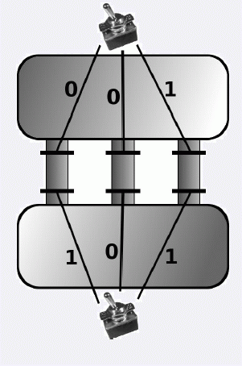

厌倦了你的工作, 你从IT行业跳槽到了一家水产养殖公司.
你的第一项任务是把两个水槽分隔开. 尝试了操作手册的内容并仔细观察之后, 你了解了水槽的工作机制.
两个水槽由n条通道相连, 每个通道上有两个水闸. 只有两个水闸都打开时通道才开启, 其余情况下通道都是封闭的.
这2n个水闸的状态由开关控制. 每个水闸的状态恰好由一个开关控制, 当然某个开关可能控制多个水闸或者不控制任何水闸. 一条通道上的两个水闸也有可能由同一个开关控制.
开关一共有m个, 编号为1; 2;……;m, 每个开关有两种状态: 开和关. 而水闸受开关控制的方式有两种:
l 开关开时水闸打开, 开关关时水闸关闭.
l 开关关时水闸打开, 开关开时水闸关闭.
